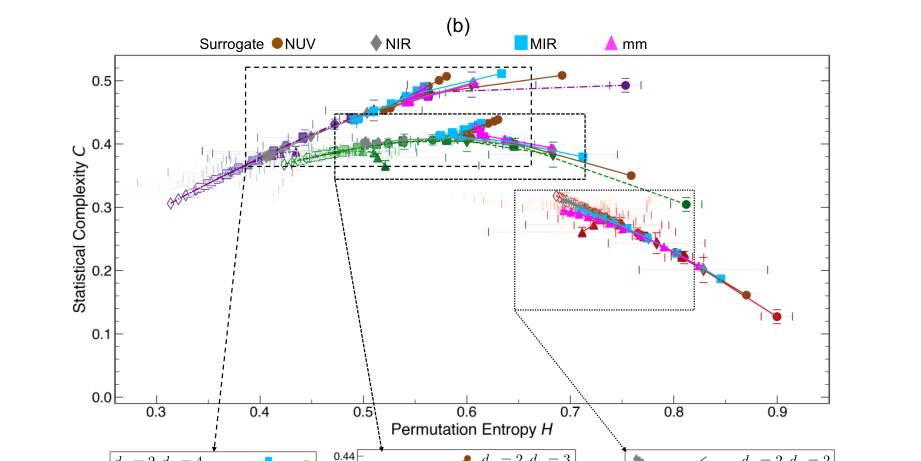

Galaxies
As statistical systems, galaxies exhibit a rich interplay between organized structure and stochastic fluctuations across a broad range of spatial scales. This duality motivates the need for quantitative frameworks capable of capturing their morphological complexity.…